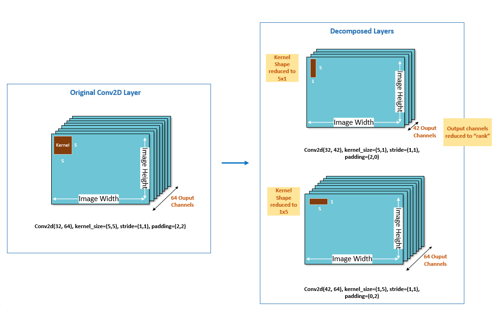

Spatial SVD¶
Context¶
Spatial singular value decomposition (spatial SVD) is a tensor decomposition technique which decomposes one large layer (in terms of Multiply-accumulate(MAC) or memory) into two smaller layers.
Consider a convolution (Conv) layer with kernel (𝑚, 𝑛, ℎ, 𝑤), where:
𝑚 is the input channels
𝑛 the output channels
ℎ is the height of the kernel
𝑤 is the width of the kernel
Spatial SVD decomposes the kernel into two kernels, one of size (𝑚, 𝑘, ℎ, 1) and one of size (𝑘, 𝑛, 1, 𝑤), where 𝑘 is called the rank. The smaller the value of 𝑘, the larger the degree of compression.
The following figure illustrates how spatial SVD decomposes both the output channel dimension and the size of the Conv kernel itself.
{kind=link}
Workflow¶
Code example¶
Setup¶
import os
from decimal import Decimal
import torch
# Compression-related imports
from aimet_common.defs import CostMetric, CompressionScheme, GreedySelectionParameters, RankSelectScheme
from aimet_torch.defs import WeightSvdParameters, SpatialSvdParameters, ChannelPruningParameters, \
ModuleCompRatioPair
from aimet_torch.compress import ModelCompressor
def evaluate_model(model: torch.nn.Module, eval_iterations: int, use_cuda: bool = False) -> float:
"""
This is intended to be the user-defined model evaluation function.
AIMET requires the above signature. So if the user's eval function does not
match this signature, please create a simple wrapper.
Note: Honoring the number of iterations is not absolutely necessary.
However if all evaluations run over an entire epoch of validation data,
the runtime for AIMET compression will obviously be higher.
:param model: Model to evaluate
:param eval_iterations: Number of iterations to use for evaluation.
None for entire epoch.
:param use_cuda: If true, evaluate using gpu acceleration
:return: single float number (accuracy) representing model's performance
"""
return .5
from decimal import Decimal
from typing import Tuple
import numpy as np
import tensorflow as tf
from tensorflow.keras.applications.resnet import ResNet50, preprocess_input, decode_predictions
# imports for AIMET
import aimet_common.defs as aimet_common_defs
from aimet_tensorflow.keras.compress import ModelCompressor
import aimet_tensorflow.defs as aimet_tensorflow_defs
def get_eval_func(dataset_dir, batch_size, num_iterations=50000):
"""
Sample Function which returns an evaluate function callback which can be
called to evaluate a model on the provided dataset
"""
def func_wrapper(model, iterations):
validation_ds = tf.keras.preprocessing.image_dataset_from_directory(
directory=dataset_dir,
labels='inferred',
label_mode='categorical',
batch_size=batch_size,
shuffle=False,
image_size=(224, 224))
# If no iterations specified, set to full validation set
if not iterations:
iterations = num_iterations
else:
iterations = iterations * batch_size
top1 = 0
total = 0
inp_data = None
for (img, label) in validation_ds:
x = preprocess_input(img)
inp_data = x if inp_data is None else inp_data
preds = model.predict(x, batch_size=batch_size)
label = np.where(label)[1]
label = [validation_ds.class_names[int(i)] for i in label]
cnt = sum([1 for a, b in zip(label, decode_predictions(preds, top=1)) if str(a) == b[0][0]])
top1 += cnt
total += len(label)
if total >= iterations:
break
return top1/total
return func_wrapper
Compressing using Spatial SVD¶
Compressing using Spatial SVD in auto mode with multiplicity = 8 for rank rounding
def spatial_svd_auto_mode():
# load trained MNIST model
model = torch.load(os.path.join('../', 'data', 'mnist_trained_on_GPU.pth'))
# Specify the necessary parameters
greedy_params = GreedySelectionParameters(target_comp_ratio=Decimal(0.8),
num_comp_ratio_candidates=10)
auto_params = SpatialSvdParameters.AutoModeParams(greedy_params,
modules_to_ignore=[model.conv1])
params = SpatialSvdParameters(mode=SpatialSvdParameters.Mode.auto,
params=auto_params, multiplicity=8)
# Single call to compress the model
results = ModelCompressor.compress_model(model,
eval_callback=evaluate_model,
eval_iterations=1000,
input_shape=(1, 1, 28, 28),
compress_scheme=CompressionScheme.spatial_svd,
cost_metric=CostMetric.mac,
parameters=params)
compressed_model, stats = results
print(compressed_model)
print(stats) # Stats object can be pretty-printed easily
Compressing using Spatial SVD in manual mode
def spatial_svd_manual_mode():
# Load a trained MNIST model
model = torch.load(os.path.join('../', 'data', 'mnist_trained_on_GPU.pth'))
# Specify the necessary parameters
manual_params = SpatialSvdParameters.ManualModeParams([ModuleCompRatioPair(model.conv1, 0.5),
ModuleCompRatioPair(model.conv2, 0.4)])
params = SpatialSvdParameters(mode=SpatialSvdParameters.Mode.manual,
params=manual_params)
# Single call to compress the model
results = ModelCompressor.compress_model(model,
eval_callback=evaluate_model,
eval_iterations=1000,
input_shape=(1, 1, 28, 28),
compress_scheme=CompressionScheme.spatial_svd,
cost_metric=CostMetric.mac,
parameters=params)
compressed_model, stats = results
print(compressed_model)
print(stats) # Stats object can be pretty-printed easily
Compressing using Spatial SVD in auto mode
def aimet_spatial_svd(model, evaluator: aimet_common_defs.EvalFunction) -> Tuple[tf.keras.Model,
aimet_common_defs.CompressionStats]:
"""
Compresses the model using AIMET's Keras Spatial SVD auto mode compression scheme.
:param model: The keras model to compress
:param evaluator: Evaluator used during compression
:return: A tuple of compressed sess graph and its statistics
"""
# Desired target compression ratio using Spatial SVD
# This value denotes the desired compression % of the original model.
# To compress the model to 20% of original model, use 0.2. This would
# compress the model by 80%.
# We are compressing the model by 50% here.
target_comp_ratio = Decimal(0.5)
# Number of compression ratio used by the API at each layer
# API will evaluate 0.1, 0.2, ..., 0.9, 1.0 ratio (total 10 candidates)
# at each layer
num_comp_ratio_candidates = 10
# Creating Greedy selection parameters:
greedy_params = aimet_common_defs.GreedySelectionParameters(target_comp_ratio=target_comp_ratio,
num_comp_ratio_candidates=num_comp_ratio_candidates)
# Ignoring first convolutional layer of the model for compression
modules_to_ignore = [model.layers[2]]
# Creating Auto mode Parameters:
auto_params = aimet_tensorflow_defs.SpatialSvdParameters.AutoModeParams(greedy_select_params=greedy_params,
modules_to_ignore=modules_to_ignore)
# Creating Spatial SVD parameters with Auto Mode:
params = aimet_tensorflow_defs.SpatialSvdParameters(input_op_names=model.inputs,
output_op_names=model.outputs,
mode=aimet_tensorflow_defs.SpatialSvdParameters.Mode.auto,
params=auto_params)
# Scheme is Spatial SVD:
scheme = aimet_common_defs.CompressionScheme.spatial_svd
# Cost metric is MAC, it can be MAC or Memory
cost_metric = aimet_common_defs.CostMetric.mac
# Calling model compression using Spatial SVD:
# Here evaluator is passed which is used by the API to evaluate the
# accuracy for various compression ratio of each layer. To speed up
# the process, only 10 batches of data is being used inside evaluator
# (by passing eval_iterations=10) instead of running evaluation on
# complete dataset.
results = ModelCompressor.compress_model(model=model,
eval_callback=evaluator,
eval_iterations=10,
compress_scheme=scheme,
cost_metric=cost_metric,
parameters=params)
return results
Sample Driver Code for Spatial SVD using Resnet50
def compress():
"""
Example Driver Function Code in which we are compressing Resnet50 model.
"""
dataset_dir = '/path/to/dataset'
model = ResNet50(weights='imagenet')
eval_func = get_eval_func(dataset_dir, batch_size=16)
compressed_model, stats = aimet_spatial_svd(model=model, evaluator=eval_func)
print(stats)
API¶
Top-level API for Compression
- class aimet_torch.compress.ModelCompressor[source]
AIMET model compressor: Enables model compression using various schemes
- static ModelCompressor.compress_model(model, eval_callback, eval_iterations, input_shape, compress_scheme, cost_metric, parameters, trainer=None, visualization_url=None)[source]
Compress a given model using the specified parameters
- Parameters:
model (
Module) – Model to compresseval_callback (
Callable[[Any,Optional[int],bool],float]) – Evaluation callback. Expected signature is evaluate(model, iterations, use_cuda). Expected to return an accuracy metric.eval_iterations – Iterations to run evaluation for
trainer – Training Class: Contains a callable, train_model, which takes model, layer which is being fine tuned and an optional parameter train_flag as a parameter None: If per layer fine tuning is not required while creating the final compressed model
input_shape (
Tuple) – Shape of the input tensor for modelcompress_scheme (
CompressionScheme) – Compression scheme. See the enum for allowed valuescost_metric (
CostMetric) – Cost metric to use for the compression-ratio (either mac or memory)parameters (
Union[SpatialSvdParameters,WeightSvdParameters,ChannelPruningParameters]) – Compression parameters specific to given compression schemevisualization_url – url the user will need to input where visualizations will appear
- Return type:
Tuple[Module,CompressionStats]- Returns:
A tuple of the compressed model, and compression statistics
Greedy Selection Parameters
- class aimet_common.defs.GreedySelectionParameters(target_comp_ratio, num_comp_ratio_candidates=10, use_monotonic_fit=False, saved_eval_scores_dict=None)[source]
Configuration parameters for the Greedy compression-ratio selection algorithm
- Variables:
target_comp_ratio – Target compression ratio. Expressed as value between 0 and 1. Compression ratio is the ratio of cost of compressed model to cost of the original model.
num_comp_ratio_candidates – Number of comp-ratio candidates to analyze per-layer More candidates allows more granular distribution of compression at the cost of increased run-time during analysis. Default value=10. Value should be greater than 1.
use_monotonic_fit – If True, eval scores in the eval dictionary are fitted to a monotonically increasing function. This is useful if you see the eval dict scores for some layers are not monotonically increasing. By default, this option is set to False.
saved_eval_scores_dict – Path to the eval_scores dictionary pickle file that was saved in a previous run. This is useful to speed-up experiments when trying different target compression-ratios for example. aimet will save eval_scores dictionary pickle file automatically in a ./data directory relative to the current path. num_comp_ratio_candidates parameter will be ignored when this option is used.
Configuration Definitions
- class aimet_common.defs.CostMetric(value)[source]
Enumeration of metrics to measure cost of a model/layer
- mac = 1
Cost modeled for compute requirements
- Type:
MAC
- memory = 2
Cost modeled for space requirements
- Type:
Memory
- class aimet_common.defs.CompressionScheme(value)[source]
Enumeration of compression schemes supported in aimet
- channel_pruning = 3
Channel Pruning
- spatial_svd = 2
Spatial SVD
- weight_svd = 1
Weight SVD
Spatial SVD Configuration
- class aimet_torch.defs.SpatialSvdParameters(mode, params, multiplicity=1)[source]
Configuration parameters for spatial svd compression
- Parameters:
mode (
Mode) – Either auto mode or manual modeparams (
Union[ManualModeParams,AutoModeParams]) – Parameters for the mode selectedmultiplicity – The multiplicity to which ranks/input channels will get rounded. Default: 1
- class AutoModeParams(greedy_select_params, modules_to_ignore=None)[source]
Configuration parameters for auto-mode compression
- Parameters:
greedy_select_params (
GreedySelectionParameters) – Params for greedy comp-ratio selection algorithmmodules_to_ignore (
Optional[List[Module]]) – List of modules to ignore (None indicates nothing to ignore)
- class ManualModeParams(list_of_module_comp_ratio_pairs)[source]
Configuration parameters for manual-mode spatial svd compression
- Parameters:
list_of_module_comp_ratio_pairs (
List[ModuleCompRatioPair]) – List of (module, comp-ratio) pairs
- class Mode(value)[source]
Mode enumeration
- auto = 2
Auto mode
- manual = 1
Manual mode
Top-level API for Compression
- class aimet_tensorflow.keras.compress.ModelCompressor[source]¶
aimet model compressor: Enables model compression using various schemes
- static ModelCompressor.compress_model(model, eval_callback, eval_iterations, compress_scheme, cost_metric, parameters, trainer=None, visualization_url=None)[source]¶
Compress a given model using the specified parameters
- Parameters:
model (
Model) – Model, represented by a tf.keras.Model, to compresseval_callback (
Callable[[Any,Optional[int],bool],float]) – Evaluation callback. Expected signature is evaluate(model, iterations, use_cuda). Expected to return an accuracy metric.eval_iterations – Iterations to run evaluation for.
compress_scheme (
CompressionScheme) – Compression scheme. See the enum for allowed valuescost_metric (
CostMetric) – Cost metric to use for the compression-ratio (either mac or memory)parameters (
SpatialSvdParameters) – Compression parameters specific to given compression schemetrainer (
Optional[Callable]) – Training function None: If per layer fine-tuning is not required while creating the final compressed modelvisualization_url (
Optional[str]) – url the user will need to input where visualizations will appear
- Return type:
Tuple[Model,CompressionStats]- Returns:
A tuple of the compressed model session, and compression statistics
Greedy Selection Parameters
- class aimet_common.defs.GreedySelectionParameters(target_comp_ratio, num_comp_ratio_candidates=10, use_monotonic_fit=False, saved_eval_scores_dict=None)[source]¶
Configuration parameters for the Greedy compression-ratio selection algorithm
- Variables:
target_comp_ratio – Target compression ratio. Expressed as value between 0 and 1. Compression ratio is the ratio of cost of compressed model to cost of the original model.
num_comp_ratio_candidates – Number of comp-ratio candidates to analyze per-layer More candidates allows more granular distribution of compression at the cost of increased run-time during analysis. Default value=10. Value should be greater than 1.
use_monotonic_fit – If True, eval scores in the eval dictionary are fitted to a monotonically increasing function. This is useful if you see the eval dict scores for some layers are not monotonically increasing. By default, this option is set to False.
saved_eval_scores_dict – Path to the eval_scores dictionary pickle file that was saved in a previous run. This is useful to speed-up experiments when trying different target compression-ratios for example. aimet will save eval_scores dictionary pickle file automatically in a ./data directory relative to the current path. num_comp_ratio_candidates parameter will be ignored when this option is used.
Spatial SVD Configuration
- class aimet_tensorflow.keras.defs.SpatialSvdParameters(input_op_names, output_op_names, mode, params, multiplicity=1)[source]¶
Configuration parameters for spatial svd compression
- Parameters:
input_op_names (
List[str]) – list of input op names to the modeloutput_op_names (
List[str]) – List of output op names of the modelmode (
Mode) – Either auto mode or manual modeparams (
Union[ManualModeParams,AutoModeParams]) – Parameters for the mode selectedmultiplicity – The multiplicity to which ranks/input channels will get rounded. Default: 1
- class AutoModeParams(greedy_select_params, modules_to_ignore=None)[source]¶
Configuration parameters for auto-mode compression
- Parameters:
greedy_select_params (
GreedySelectionParameters) – Params for greedy comp-ratio selection algorithmmodules_to_ignore (
Optional[List[Operation]]) – List of modules to ignore (None indicates nothing to ignore)